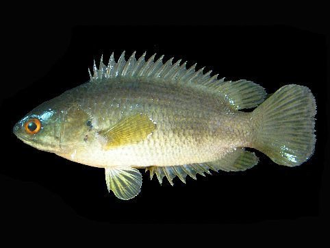

कवईClimbing Perch
Anabas testudineus · Anabantidae · FSH-0017

- Scientific name
- Anabas testudineus (Bloch, 1792)
- Family
- Anabantidae
- Hindi
- कवई
- Status here
- native
- IUCN
- LC
When to look कब देखें
Present all year.
Uses and possibilities उपयोग और संभावनाएँ
“Traditional medicine” means a documented traditional use, not a claim that it works. Nothing on this page is medical advice.
Drawn from the documented uses in the profile below, where each is labelled traditional, current or a research lead. All uses →
कवई / Climbing Perch
Anabas testudineus (Bloch, 1792) — Anabantidae
कवई — वह मछली जो चलती है। बरसात की रात में तालाब से निकलकर गीली घास पर गलफड़े के ढक्कन और पूँछ के सहारे घिसटती हुई दूसरे गड्ढे तक जाती है, और रास्ते में पकड़ी जाए तो घंटों पानी के बिना ज़िंदा रहती है, क्योंकि सिर के अंदर एक अलग अंग से हवा साँस ले सकती है। सख़्त, काँटेदार, ज़िद्दी, गँदले और बिना ऑक्सीजन के पानी में भी जीने वाली, और पूर्वी ज़िलों की थाली की पुरानी मछली।
Quick Identification त्वरित पहचान
| Feature | Description |
|---|---|
| Size | 10–20 cm, occasionally 25 cm |
| Shape | Oblong, somewhat compressed, with a large head and a mouth with small teeth |
| Colour | Olive to grey-brown above, paler below; a dark spot at the base of the tail and another behind the gill cover |
| Fins | Long dorsal and anal fins with strong spines; a rounded tail |
| Gill cover | The rear edge serrated with sharp spines, which it spreads when caught: the "climbing" tool and the reason it is hard to hold |
| Behaviour | Gulps air at the surface; survives in a bucket; crawls on land after rain |
Field tip: A spiny, hard-bodied, greyish fish from a muddy ditch that stays alive in the basket long after the others and spreads its gill covers like saws when handled. On a monsoon night, a fish crossing a wet path is almost always this one.
हिंदी — कैसे पहचानें: गँदली नाली की काँटेदार, सख़्त, स्लेटी मछली जो टोकरी में बाकी सबके मरने के बाद भी ज़िंदा रहती है और पकड़ने पर गलफड़े के ढक्कन आरी की तरह फैला देती है। बरसात की रात गीले रास्ते पर चलती मछली लगभग हमेशा कवई है।
Morphology आकारिकी
Biometrics (Indian plains):
| Measurement | Range |
|---|---|
| Standard length | 10–20 cm |
| Weight | 50–250 g |
| Dorsal fin | 16–19 spines, 7–10 soft rays |
| Anal fin | 9–11 spines, 8–11 soft rays |
| Eggs per female | 5,000–20,000 |
The labyrinth organ: A chamber above the gills lined with folded, blood-rich plates through which the fish absorbs oxygen from gulped air. It must surface to breathe and will drown if held under water; with it, it lives in water with no oxygen at all and survives hours to days in damp air.
Scales and spines: The body is armoured with hard ctenoid scales; the gill cover's serrated edge and the fin spines lock when the fish is seized, which is how it wedges itself in a heron's throat and why fishermen handle it with a cloth.
Locomotion on land: It rocks on its spread gill covers and pushes with the tail and pectoral fins, covering tens of metres on wet ground; the "climbing" of the English name, after a tale of it climbing palms, is an exaggeration.
हिंदी: गलफड़ों के ऊपर एक भूल-भुलैया जैसा अंग है जिसकी तहों से यह निगली हवा का ऑक्सीजन लेती है; इसे साँस के लिए सतह पर आना पड़ता है और पानी में दबाकर रखो तो डूब जाती है। कड़े शल्क, आरीदार गलफड़े का ढक्कन और पंखों के काँटे पकड़े जाने पर जाम हो जाते हैं — बगुले के गले में फँसने का यही कारण है। ज़मीन पर गलफड़े के ढक्कनों पर झूलते हुए पूँछ से धकेलती है।
Behaviour & Ecology व्यवहार और पारिस्थितिकी
The fish of the worst water: stagnant, muddy, weed-choked, hot, oxygen-free ditches and drying ponds are its home, because it breathes air and little else there competes. It eats whatever the margin offers: insect larvae, worms, snails, shrimp, small fish, algae and fallen fruit. In the dry season it buries itself in the mud of a drying pond and waits.
With the first heavy rains it migrates, by water where it can and overland where it must, into flooded fields and new pools to spawn; eggs float and hatch in a day, and the fry grow fast in the warm shallows. This wandering makes it the first fish in a new pond and a common catch in paddy fields. Herons, kingfishers, Great Snakehead and otters eat it, with the spines as the price.
हिंदी: सबसे ख़राब पानी की मछली: ठहरा, गँदला, घास से भरा, गरम, बिना ऑक्सीजन का — क्योंकि यह हवा साँस लेती है और वहाँ इसका कोई मुक़ाबला नहीं। कीड़े, केंचुए, घोंघे, झींगे, छोटी मछली, काई, गिरे फल — जो मिले। सूखे में सूखते तालाब की कीचड़ में दबकर इंतज़ार। पहली भारी बारिश में पानी से, और जहाँ ज़रूरी हो ज़मीन से, खेतों और नए गड्ढों में जाकर अंडे देती है। नए तालाब की पहली मछली यही होती है।
Life Cycle / Phenology जीवन चक्र
| Stage / season | Event |
|---|---|
| June–August | Rains; overland and upstream movement; spawning in flooded shallows |
| Eggs, 18–24 hours | Floating, transparent, thousands |
| Fry, first month | In warm weedy shallows and paddy |
| 1 year | Mature at about 8–10 cm |
| November–May | Retreats to permanent water or buries in mud as pools dry |
| Lifespan | 3–6 years |
हिंदी: बरसात में यात्रा और अंडे; अंडे एक दिन में फूटते हैं; बच्चे गरम उथले पानी और धान में; साल भर में प्रजनन लायक; सूखे में कीचड़ में।
Host Plants or Prey आहार
- Insect larvae including mosquito larvae of Southern House Mosquito and Malaria Mosquito, Giant Water Bug nymphs, worms, Freshwater Apple Snail young, Freshwater Grass Shrimp, fry of other fish, Water Silk and detritus.
Predators / Natural Enemies शत्रु
- Birds: Indian Pond Heron, Grey Heron, White-throated Kingfisher, Pied Kingfisher, Asian Openbill.
- Fish and others: Great Snakehead, Stinging Catfish, Bengal Monitor, Checkered Keelback, otters.
- People: a valued food fish, netted and hand-caught in paddy and ditches.
Agricultural / Human Relevance कृषि प्रासंगिकता
Food. A traditional food fish of eastern UP, Bihar and Bengal, prized for its firm flesh and for staying alive to market without ice; sold live in baskets. Often caught by hand in flooded paddy and drying ponds. The spines must be handled with a cloth.
Aquaculture. Farmed increasingly in Bangladesh, Bengal and the north-east, including a fast-growing Thai strain; it tolerates crowding and poor water and fetches a good price. A possible small-pond crop for the district, with the caution that the imported strain should not be loosed into the wild.
In the paddy field. Eats mosquito larvae and insect pests of rice; a wild harvest from rice-fish fields.
Traditional and Ethnobotanical Use. Recorded in Bengali and eastern folk medicine as a strengthening food for the sick and for nursing mothers; the "walking fish" appears in proverbs about stubbornness.
Today. Common in the wild and declining in places where ditches are filled and ponds drained; cultivated commercially elsewhere.
Research direction (a lead, not a result). ICAR–CIFA and Bangladeshi institutes have published culture protocols for koi in small ponds and in rice fields; rice-fish farming with native koi is a documented option for low-lying kharif fields in the district.
हिंदी: पूर्वी ज़िलों की पुरानी खाद्य मछली, सख़्त मांस, बिना बर्फ़ के बाज़ार तक ज़िंदा; टोकरी में ज़िंदा बिकती है। धान के खेत और सूखते तालाब में हाथ से पकड़ी जाती है। बांग्लादेश और बंगाल में इसकी खेती बढ़ रही है, थाई किस्म तेज़ बढ़ती है — पर उसे तालाब से बाहर न जाने दें। खेत में मच्छर के लार्वा और धान के कीड़े खाती है; धान-मछली खेती में यह देसी विकल्प है।
Expected Locally स्थानीय रूप से अपेक्षित
Not a field record. Written from published accounts for eastern Uttar Pradesh. No confirmed local sighting yet — if you have seen it, that is what the atlas needs.
अभी तक स्थानीय पुष्टि नहीं। यह विवरण प्रकाशित स्रोतों से है, किसी अवलोकन से नहीं।
To be expected in every pond, ditch and flooded field in the district and in every fish market in the monsoon. A photograph of a live fish with its gill covers spread, or of one crossing a wet path at night, is a confirmed record.
Distribution वितरण
Global range: South and South-east Asia from India and Sri Lanka through Bangladesh, Myanmar and Thailand to Indo-China, southern China, Malaysia and Indonesia.
In India: The Gangetic and Brahmaputra plains, the eastern coast and the north-east; introduced elsewhere.
In Uttar Pradesh: Common in the eastern districts, scarcer westward.
In Basti district / eastern UP: Expected in all still water.
Research Questions शोध प्रश्न
Anyone can investigate these | कोई भी इन प्रश्नों की जाँच कर सकता है
- On which night do the first fish cross the paths? / किस रात पहली मछलियाँ रास्ता पार करती हैं? — Walk the pond edge with a torch after the first big rain.
- How far can one travel on wet grass? — Follow one from a safe distance and pace it.
- How long does one live in a bucket of water without being allowed to surface? — Do not do this; ask instead why fishermen keep them in shallow water.
- What does the market price do in the monsoon? / बरसात में बाज़ार भाव क्या होता है? — Ask weekly.
- Which pond in the village has the most, and is it the dirtiest? — Net five ponds.
Similar Species मिलती-जुलती प्रजातियाँ
| Species | How to tell apart | हिंदी |
|---|---|---|
| Great Snakehead and other snakeheads (Channa) | Longer, cylindrical, with a flat snake-like head; also air-breathing and walking; no spiny serrated gill cover | लंबी, सिर साँप जैसा |
| Stinging Catfish (Heteropneustes) | Scaleless, with barbels and venomous pectoral spines; air-breathing | बिना शल्क, मूँछें |
| Pool Barb and other barbs | Soft-finned, silvery, no spiny gill cover; die quickly out of water | मुलायम, चाँदी जैसी, जल्दी मर जाती है |
Field rule: A hard, spiny, grey fish with a saw-edged gill cover that survives out of water and walks on wet ground is the climbing perch.
Taxonomy & Classification वर्गीकरण
Original description. Described by Marcus Elieser Bloch in 1792 as Anthias testudineus in Naturgeschichte der ausländischen Fische 6: 121, pl. 322. The genus Anabas ("climbing") was erected by Cloquet in 1816; testudineus, "tortoise-like", for the armoured body.
Subspecies. None recognised, but molecular work shows several lineages across Asia that may be distinct species; the Indian and the South-east Asian forms differ.
Family and order placement. Anabantidae, the climbing gouramies; order Anabantiformes, the labyrinth fishes, with the snakeheads and gouramies.
Phylogenetic notes. The labyrinth organ evolved once in the ancestor of the order and is why these fishes dominate the stagnant waters of tropical Asia.
IUCN status rationale. Least Concern: very wide range, abundant, tolerant.
Photo Gallery फोटो गैलरी
Photos needed आवश्यक फोटो
- [ ] Live fish with gill covers spread (गलफड़े फैलाए)
- [ ] Fish on wet ground at night (ज़मीन पर)
- [ ] In the market basket (बाज़ार में)
Atlas Connections संबंधित प्रजातियाँ
- Great Snakehead and Stinging Catfish — the other air-breathing fish of the ditches
- Rohu — the pond fish it shares water with and is caught beside
- Paddy — the flooded fields it spawns in
- Indian Pond Heron — eats it, spines and all
References संदर्भ
- Bloch, M.E. (1792). Naturgeschichte der ausländischen Fische, vol. 6, p. 121, pl. 322. Berlin. [original description, as Anthias testudineus]
- Day, F. (1878). The Fishes of India. Bernard Quaritch, London.
- Talwar, P.K. & Jhingran, A.G. (1991). Inland Fishes of India and Adjacent Countries, vol. 2. Oxford & IBH, New Delhi.
- Jayaram, K.C. (2010). The Freshwater Fishes of the Indian Region, 2nd ed. Narendra Publishing House, Delhi.
- Graham, J.B. (1997). Air-Breathing Fishes: Evolution, Diversity, and Adaptation. Academic Press, San Diego.
- Sarkar, U.K. et al. (2005). Captive breeding of climbing perch Anabas testudineus (Bloch, 1792) with Wova-FH for conservation and aquaculture. Aquaculture Research 36(10): 941–945.
- IUCN (2019). Anabas testudineus. IUCN Red List of Threatened Species.
- GBIF Occurrence Data — Anabas testudineus, India (2026).
Source file: species/fauna/fish/climbing_perch.md